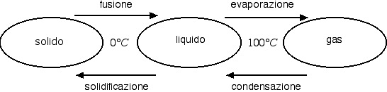
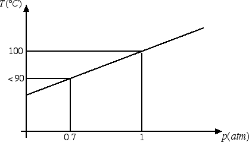

Calore specifico e latente
Calore latente di vaporizzazione
Abbiamo visto nella precedente sezione che i cambiamenti di stato avvengono a temperatura costante ma con scambio di calore. Di seguito riportiamo i nomi e le temperature che caratterizzano i cambiamenti di stato dell'acqua.

In alcuni casi (es.: naftalina) è possibile far avvenire il cambiamento di stato da solido a gas senza passare attraverso la fase liquida. Questo processo prende il nome di sublimazione. Il passaggio opposto da gas a solido prende invece il nome di brinamento, dal momento che la brina ne è un tipico esempio.
Come il calore di fusione, anche il calore necessario all'ebollizione è direttamente proporzionale alla massa m, ossia Q = Lv · m. Il coefficiente di proporzionalità Lv dipende dalla sostanza che prendiamo in considerazione e prende il nome di calore latente di vaporizzazione. Nel caso dell'acqua a pressione atmosferica Lv = 2.25 · 106 J / kg. Questo vuol dire che serve un calore pari a Q = 2.25 · 106 J per far evaporare 1 kg di acqua. Viceversa, la condensazione di 1 kg di acqua comporta una cessione di Q = 2.25 · 106 J all'ambiente esterno.
L'elevato calore latente di vaporizzazione rende l'acqua molto efficace nello spegnimento del fuoco: infatti l'evaporazione dell'acqua in prossimità di un incendio permette di assorbire notevoli quantità di calore alla sostanza che brucia. Inoltre, il vapor acqueo che si crea, avvolgendo il corpo in fiamme, ne ostacola l'afflusso dell'ossigeno necessario per la combustione.
Anche nel processo di vaporizzazione bisogna specificare la pressione alla quale avviene il processo. Ad esempio, la temperatura di ebollizione dell'acqua aumenta all'aumentare della pressione, come emerge dal seguente grafico:

A 0.7 atmosfere (pressione che si ha per esempio a 3000 m di altezza) la temperatura di ebollizione dell'acqua è inferiore a 90°C. Questo è il motivo per cui la pasta in montagna si scuoce. Il fatto che la temperatura di ebollizione diminuisca al diminuire della pressione comporta anche la necessità per gli astronauti nello spazio di indossare delle tute pressurizzate, in grado di evitare la vaporizzazione del sangue che altrimenti potrebbe avvenire anche alla temperatura della navicella.
Su questi principi fisici si basa anche la macchinetta per il caffè espresso. La parola stessa espresso deriva da extra pressione. Nella macchinetta del caffè il vapore presente al di sopra dell'acqua genera una pressione sull'acqua che risale per il condotto centrale. La polvere di caffè è stata compressa ed oppone resistenza. In queste condizioni la pressione di vapore cresce, l'acqua bolle a 120°C e la sua capacità di estrarre aroma dal caffè è notevolmente accresciuta. Su meccanismi analoghi si basa il funzionamento della pentola a pressione.
Prima di concludere questa sezione vogliamo sottolineare come tutte le sostanze hanno una loro temperatura di fusione e di ebollizione. Il ferro ha una temperatura di fusione di 1536°C e una temperatura di ebollizione di 2750°C, il mercurio ha una temperatura di fusione di -38°C e una temperatura di ebollizione di 356°C, l'ossigeno ha una temperatura di fusione di -222°C e una temperatura di ebollizione di -183°C. Di conseguenza a temperatura ambiente il ferro è solido, il mercurio è liquido e l'ossigeno gassoso.